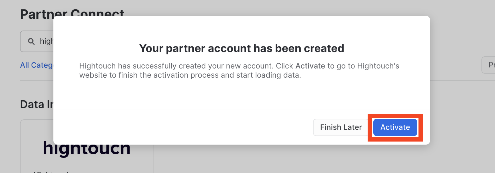
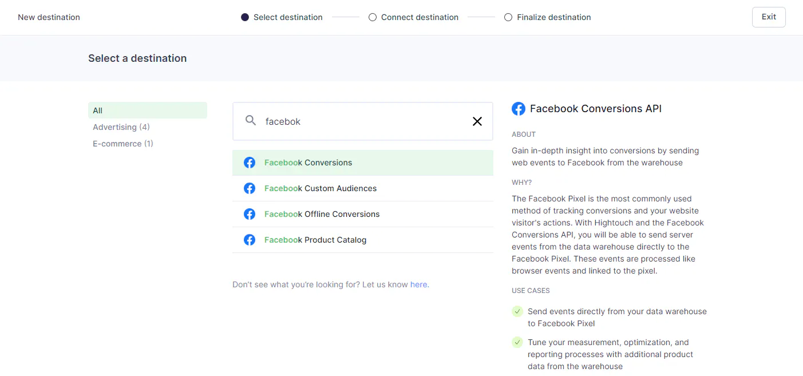
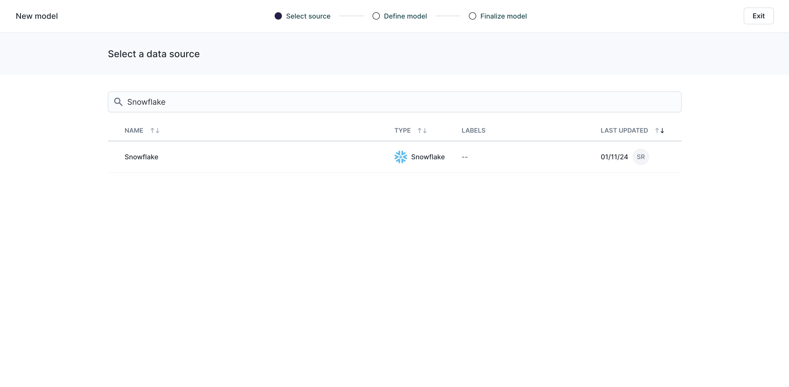
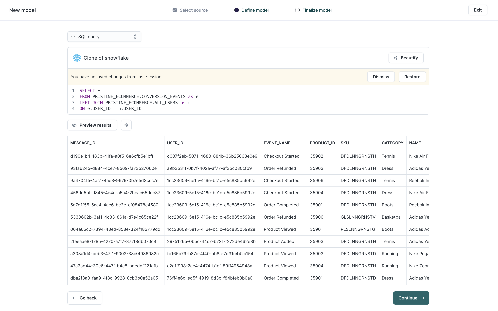

Hightouch helps marketers activate their customer data from Snowflake to over 125 different applications. The Data Activation platform, powered by Reverse ETL, provides both a SQL-based UI as well as a no-code audience builder to help teams across an organization complete what is now being called the "last mile" of the Modern Data Stack.

Performance marketing and data teams leverage Hightouch to integrate Snowflake with Facebook's Conversions API (CAPI). CAPI provides a reliable solution for tracking and sharing customer interactions with Facebook, overcoming the challenges posed by ad blockers, cookie restrictions, and evolving privacy policies.
Rather than relying on the Facebook pixel, with Hightouch, you can send events directly from Snowflake to Facebook CAPI. Doing so allows you to enrich your conversion events with your rich first-party data in Snowflake to send better signals that unlock better audience targeting, attribution reporting, and campaign optimization.
Check out this webinar to learn more about the importance of server-side conversion signals.
Prerequisites
- Basic experience with Snowflake and SQL
- Access to a Snowflake account with user and event data.
- Access to Hightouch.
- Access to a Facebook ads account.
What You'll Learn
- How to connect Hightouch to Snowflake and Facebook
- How to select the data you'll sync to Facebook
- How to sync data from Snowflake to Facebook's Conversion API (CAPI)
What You'll Build
- A recurring sync of enriched purchase events from Snowflake to Facebook CAPI
Imagine you're a retailer using Facebook ads to drive traffic to your online and brick-and-mortar stores. You currently rely on the Facebook pixel to track user behaviors like page views, add to cart, and purchase events. However, recent changes in iOS tracking and the prevalence of ad-blockers are causing the pixel to miss conversions. Additionally, the Facebook pixel doesn't account for in-store purchases, which drive a significant portion of your sales.
To address these challenges, you can leverage Hightouch to send conversion events enriched with first-party data from Snowflake to Facebook's Conversion API, improving the accuracy and effectiveness of your campaigns.

In this Quickstart, we will cover sending conversion events to Facebook. Leveraging our event data in Snowflake, in addition to propensity models and first-party data, we will, in just a few minutes, setup automated and observable pipelines that can be replicated across to other paid media platforms.
First, you need to have the data that you want to push prepared within Snowflake.
Log in to Snowflake
If you already have a Snowflake account, you can use your credentials to log in. If you do not already have an account, you can visit [https://signup.snowflake.com/]https://signup.snowflake.com/ to sign up for a 30-day free trial. You will want to make sure that the account you use in Snowflake has the permissions to create a new database, schema, and warehouse to be used by Hightouch.
Set-up Hightouch through Partner Connect
You can set up a database, schema, and warehouse for use with Hightouch by setting up Hightouch through Partner Connect in Snowsight. See the [https://hightouch.com/blog/hightouch-snowflake-partner-connect](detailed instructions) on the Hightouch Blog for more details.
- Click the Partner Connect tab under Admin.

- Search for Hightouch (or scroll to the Data Integration section), and select it.

- View the Database, Warehouse, User, and Role that will be created for the integration, and click Launch.

- When the creation is complete, you will see a pop-up telling you that the creation has finished. Click Activate to be taken to Hightouch to log in.

- Log in to Hightouch using your Hightouch credentials, and you will have a Data Source from Snowflake created in Hightouch.
Next, we will connect Hightouch to Facebook to allow it to push data from Snowflake to Facebok.
Creating a Facebook destination
To push data to Facebook for CAPI, we need to create a destination.
- Navigate to destinations and click Add Destination.

- Search for Facebook Conversions, select it, and click Continue.

- Connect to Facebook with 0Auth. This will open up a new window to input your credentials. Once done, click Continue.

- Enter your access token and pixel ID (more info here) and then click Continue.

- Name the destination (ex. Facebook CAPI Destination) and then click Finish.

Choose the data to sync to Facebook
Next, you want to create and define your data model. You can define your data using either a SQL editor, table selector, or your existing dbt models. For this scenario, we'll be using the SQL Editor.
- Navigate to models in Hightouch and click Add model.

- Select the Snowflake data source you connected earlier and click Continue.

- Select the SQL Editor.

- Input a query that joins your events table onto your customer table.
SELECT *
FROM public.events e
LEFT JOIN public.customer c ON e.customer_id = c.customer_id
Note: each row should be a unique event with a unique event ID and timestamp (within the last 7 days). You can additionally include any of the server event parameters or custom data parameters below. The more customer information you're able to provide, the higher the likelihood that Facebook will match events to the correct user profiles.
- Click Preview to verify your model output looks good, then hit Continue.

- Then name your model, select your primary key, and click Finish.

Setup your sync from Snowflake to Facebook
With the model created, it's time to create your sync to Facebook.
- Navigate to Syncs from the model you just created.

- Click Add a sync
- Select your Facebook CAPI destination and click Continue.

- Select the Facebook CAPI account that you set up and choose which columns you want to sync to Facebook.

- If you're dealing with PII data you can configure Hightouch automatically hash your data.

- After you've mapped your columns, you can set your sync schedule. You have several choices on how to schedule the sync with Facebook. For example, it could happen on a set interval or with a CRON expression.

- With your sync configured, simply click Run and your audience will begin syncing to Facebook. By sending these enriched events with first-party data, Facebook will now be able to match your events to user profiles more effectively.

By implementing Facebook Conversions API (CAPI) with Snowflake and Hightouch, you can in just a matter of minutes setup a flexible and observable solution to routing conversion events to any paid media platform. This integration will enable you to harness the full power of Facebook's advertising platform and improve the effectiveness of your campaigns.
What we've covered
- How to connect Snowflake to Hightouch
- How to connect Hightouch to
- How to create a model in Hightouch
- How to setup a sync to Facebook CAPI with Hightouch